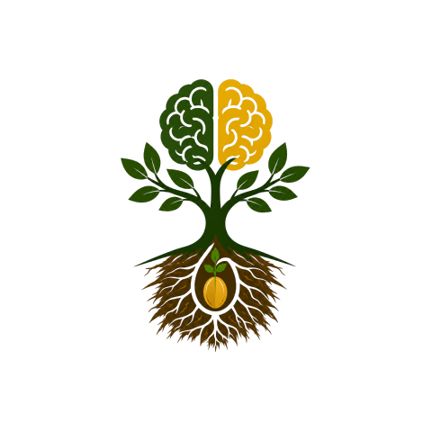
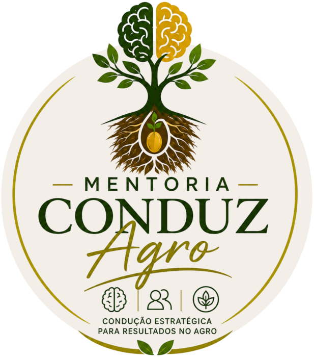

Especialista em
- Georreferenciamento de Imóveis Rurais
- Avaliações e Perícias Rurais e Ambientais
- Regularização Imobiliária e Proteção Patrimonial
- Regularização e Gestão Ambiental

Conduz Agro
Pilar Técnico
Tenha conhecimento técnico para saber o que analisar, o que fazer, por que fazer e como resolver pendências documentais do imóvel rural — seja no crédito rural, em inventários, vendas ou processos de regularização de imóveis — e destrave os casos que chegam até você.
Ao longo da minha atuação com imóveis rurais, percebi que muitos problemas não estavam na falta de um procedimento técnico, mas na falta de uma visão completa do caso.
Muitas vezes, o profissional recebia uma demanda aparentemente simples — um CCIR, um crédito rural, uma venda, um inventário ou um georreferenciamento — e só descobria o verdadeiro problema quando já estava no meio do processo.
Foi a partir dessas situações que desenvolvi uma forma de trabalho baseada em diagnosticar primeiro, entender o cenário e só então definir o caminho técnico.
É essa experiência prática que levo para a Mentoria VIP.
No agro, muitos casos chegam até você envolvendo documentos, regularização, crédito rural, inventários, vendas, divisões de imóveis e tantas outras situações.
E, para destravar esses casos, não basta conhecer um procedimento isolado. É preciso saber o que analisar, quais documentos conferir, onde estão as pendências, o que cada situação exige e qual caminho seguir para resolver.
Você irá conhecer quais são os cadastros obrigatórios do imóvel rural, o que cada um representa, como interpretar as informações e como identificar pendências, inconsistências e riscos. Porque um caso de crédito rural, inventário, venda ou regularização começa muito antes de uma solução: começa pela leitura correta do imóvel e da documentação.
Por isso, no pilar Técnico, você vai aprender a analisar, interpretar, identificar problemas e definir o caminho da solução. E o melhor: já na 2ª aula, você começa a aplicar o conhecimento em casos reais e transformar essa nova capacidade técnica em oportunidade de faturamento.
Conhecimento técnico que você aprende, aplica e transforma em solução.
Conhecimento técnico sem visão do caso limita a solução.
Informação sem interpretação não destrava o imóvel.
A causa real está na capacidade de analisar o imóvel, compreender seus cadastros e documentos, identificar pendências e saber qual caminho seguir para resolver cada situação.
Você precisa saber quais são os cadastros obrigatórios, como interpretá-los, cruzar as informações e identificar o que pode estar impedindo um crédito, uma venda, um inventário ou uma regularização.
Porque não basta saber fazer um procedimento. É preciso entender o caso, encontrar o problema e saber como resolver — e, principalmente, transformar esse conhecimento em uma solução que você já consegue aplicar e oferecer ao cliente.
São justamente essas etapas que você trabalha na Mentoria VIP Regularização Rural na Prática — Método Conduz Agro.
Primeiro, segurança técnica para compreender o caso, identificar o que realmente precisa ser analisado e definir o caminho correto.
Ir além da demanda inicial e compreender o cenário completo: objetivo do cliente, documentos, cadastros, situação patrimonial, legislação aplicável, riscos, envolvidos, pendências e possíveis impactos.
Separar o que o cliente pede do que o caso realmente exige. Cruzar informações, identificar inconsistências, lacunas e riscos antes de indicar qualquer solução.
Organizar as informações e estabelecer o que precisa ser feito, em qual ordem, quais documentos e informações ainda faltam, quais procedimentos são aplicáveis e quais profissionais ou órgãos precisam ser envolvidos.
Ter clareza para explicar o diagnóstico, justificar tecnicamente a solução indicada e orientar o cliente com segurança, sem executar etapas desnecessárias ou assumir riscos que poderiam ter sido identificados antes.
A mentoria será conduzida de forma prática e direcionada, com foco na aplicação real dos conteúdos na rotina do profissional.
Encontros online para desenvolvimento dos conteúdos, trocas e direcionamentos estratégicos.
Disponibilizados no grupo, para você aplicar o que aprendeu.
Acesso durante toda a mentoria.
Espaço para dúvidas e direcionamentos, com suporte direto para as situações reais que você estiver enfrentando no dia a dia.
A mentoria não se limita ao conteúdo das aulas. O acompanhamento contínuo permite que você traga seus casos reais, dúvidas e desafios, sendo orientado de forma estratégica e personalizada.
Compreensão do CCIR, SNCR e sua base legal, incluindo identificação e leitura dos principais dados cadastrais. Análise integrada do CCIR com matrícula, CAR e ITR para identificar divergências, inconsistências, desatualizações e possíveis travamentos. Estruturação de um diagnóstico cadastral e uso do CCIR como ferramenta para orientar a regularização do imóvel.
Aplicação prática da análise do CCIR na definição do procedimento adequado para cada situação. Conferência de matrícula, posse, titularidade e dados cadastrais, escolha entre emissão, alteração, retificação, compra, desmembramento ou cancelamento e execução do procedimento com segurança. Integração do CCIR ao CNIR e aos cadastros da Receita Federal.
Execução dos principais procedimentos relacionados ao CCIR em diferentes situações, incluindo emissão, aquisição total ou parcial, atuação como procurador, pessoa falecida, retificações e cancelamento. Aplicação das regras de integração entre INCRA e Receita Federal e utilização prática do CNIR e do CIB.
Compreensão do ITR, quem deve declarar, prazos, base de cálculo, áreas não tributáveis e consequências da não entrega. Identificação dos documentos necessários e execução da declaração, utilizando um caso prático para compreender o processo e os principais cuidados na análise das informações do imóvel.
Compreensão da finalidade e estrutura do CAR, suas bases legais e sua relação com a regularização ambiental do imóvel rural. Análise das informações declaradas, diferenças entre CAR e propriedade, utilização do SICAR e sistemas estaduais, identificação de inconsistências e execução de um CAR desde o cadastro inicial até a retificação.
De R$ 999,00
Parcelamento em até 3x no cartão ou 2x no pix, pelo valor à vista.
Mentoria VIP · Regularização Rural na Prática
Minha atuação com imóveis rurais começou pela parte técnica — georreferenciamento, crédito rural, regularização, avaliações e perícias.
Com o tempo, percebi que os casos mais complexos exigiam algo além de executar um procedimento: era preciso saber analisar o imóvel como um todo, identificar o problema real e conduzir o caminho da solução. Foi dessa experiência que nasceu o Método Conduz Agro.
Hoje, uno conhecimento técnico, análise de casos, comunicação, inteligência emocional e condução profissional para ajudar profissionais do agro a deixarem de ser apenas executores e passarem a atuar com mais segurança, clareza e autoridade.
Técnica para analisar.
Clareza para decidir.
Condução para resolver.